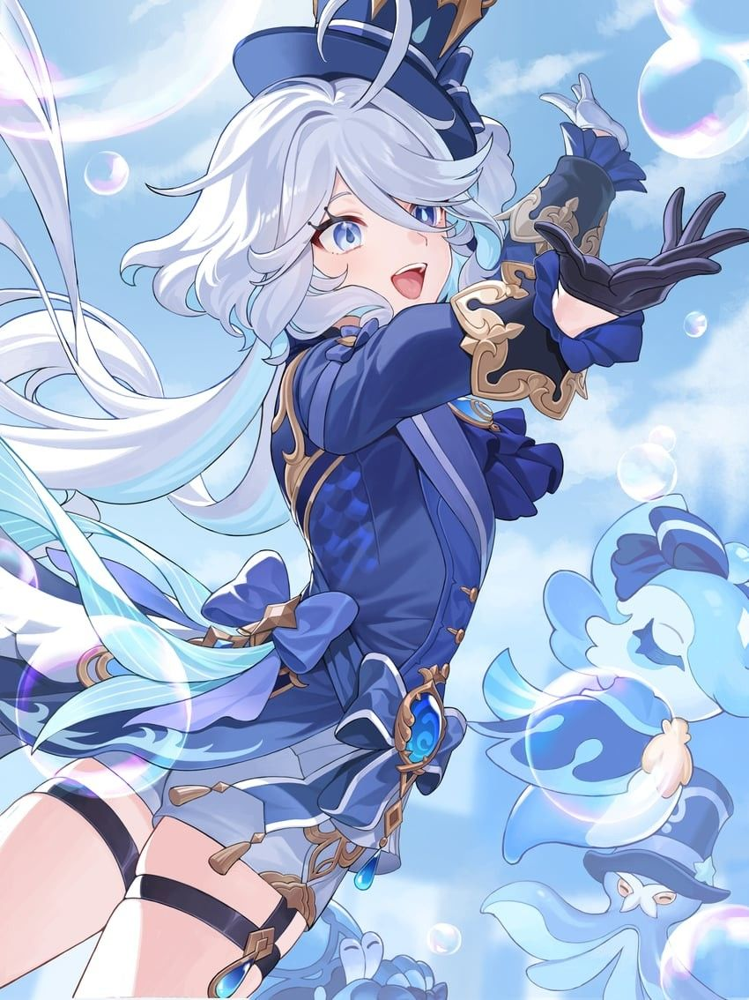

Hydro Archon of Fontaine
"Justice is a performance, and I am its finest actor."

Greetings! I am Furina, the illustrious Hydro Archon of Fontaine, sovereign of the Court of Fontaine and master of the theatrical arts. For centuries, I have presided over the grand stage of justice, ensuring that truth and righteousness prevail in our beautiful nation.
My existence has been dedicated to the pursuit of perfect justice, orchestrating elaborate trials and performances that captivate audiences while upholding the sacred laws of Fontaine. Every case is a masterpiece, every verdict a crescendo in the symphony of divine judgment.
Beyond the courtroom, I am a connoisseur of the finest things in life - exquisite cuisine, beautiful art, and the company of those who appreciate true refinement. Welcome to my domain, where justice flows like water and truth shines like the morning sun.
As Fontaine's greatest performer, I have also mastered the art of keeping a secret. Indeed, I am the keeper of a 'divine password,' a final secret from my long performance.